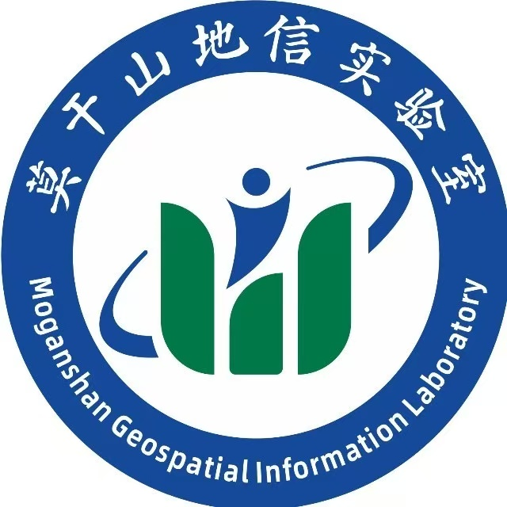
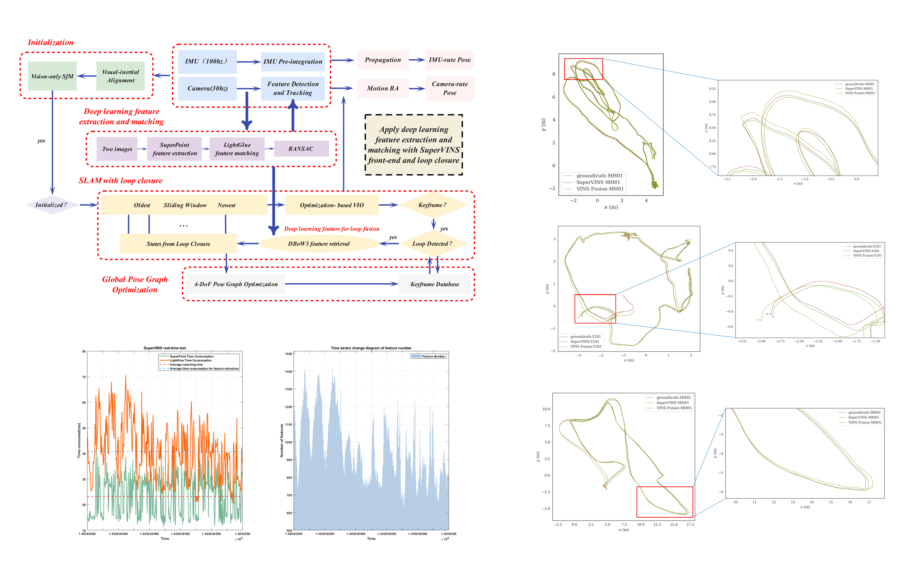

News (Recent 7)
- [Aug. 2025] I attended the 6th Annual Conference of China Robotics Society (CCRS 2025) , themed “Human-Robot Integration, Intelligent Future,” held in Changsha, China.
- [Jul. 2025] I was selected by The China Antarctic Research Center for Surveying and Mapping, Wuhan University for the 2025 Yulong Snow Mountain Glacier Expedition (unable to join due to time conflict).
- [Jul. 2025] I was a summer camper at the 2025 Spatial-Temporal Information and Ecological Restoration International Summer School .
- [Jul. 2025] I served as Academic Reviewer for IEEE RA-L.
- [Apr. 2025] I was a teaching Assistant for "Artificial Intelligence and Machine Learning" (Class of 2023, Intelligent Navigation Major) at Wuhan University.
- [Mar. 2025] My paper SuperVINS accepted by IEEE Sensors Journal.
- [Dec. 2024] I was awarded the First-Class Scholarship for Freshmen Masters at Wuhan University.
About
Experiences

Aug, 2025
Visiting Student @ Moganshan
Geospatial Information Laboratory
Supervisor: Prof. Zengke Li
 Aug, 2023
Aug, 2023
Publications ( / )

SuperVINS: A Real-Time Visual-Inertial SLAM Framework for Challenging Imaging Conditions
IEEE Sensors Journal, 2025